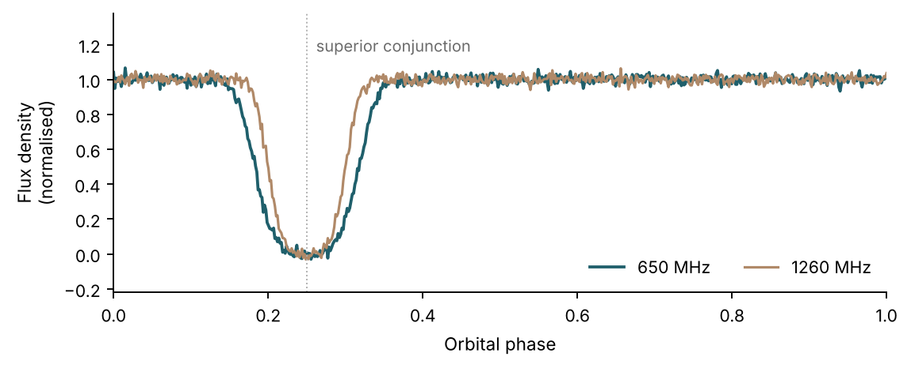

I study spider millisecond pulsars: compact binaries in which the pulsar wind ablates the low-mass companion star. This ablated material blocks the pulsar emission from reaching us, causing an eclipse of the pulsed signal. My work focuses on the investigating these eclipses that can also reveal about how these systems evolve.
I am completing a PhD at NCRA–TIFR under Prof. Bhaswati Bhattacharyya.

A millisecond pulsar spins hundreds of times a second because it spent a long time accreting matter from a companion star. In the systems called spiders, the pulsar’s relativistic wind now ablates the star that recycled it. Black widows have stripped their companions below 0.05 M☉; redbacks still hold companions of 0.1–0.9 M☉.
I measure eclipse properties through broadband polarimetry with the uGMRT and the Parkes ultra-wideband receiver. Eclipse duration, depth, and the behaviour of the polarised signal all depend on observing frequency, and that dependence is what distinguishes absorption in the outflow from dispersive smearing of the pulse. Once the mechanism is identified, the electron column through the eclipse medium gives the mass-loss rate, and from that the timescale on which the companion is destroyed.
I timed millisecond pulsars discovered in the GMRT High-Resolution Southern Sky Survey, including systems in compact and eclipsing binaries. I also study how stable millisecond pulsar average profiles are, how they evolve with frequency, and what single-pulse jitter implies for the precision floor of pulsar timing arrays.
Ongoing projects include polarisation and eclipse studies of spider systems with Parkes and the uGMRT, low-frequency pulse profile variability and polarimetry in uGMRT Bands 3 and 4, searches for radio counterparts of Fermi-detected spider candidates, and a comparison of single-pulse energy distributions in bright pulsars and RRATs with the burst-energy distributions of fast radio bursts.
Full records on ADS.
Pulsar analysis with PRESTO, PSRCHIVE, PSRTIME, Fitorbit, TEMPO2, PulsePortraiture and PINT. Radio imaging and calibration with CASA. Trained observer at the Parkes telescope; experienced with uGMRT observations. Python and Fortran.
Listed on the publications page.